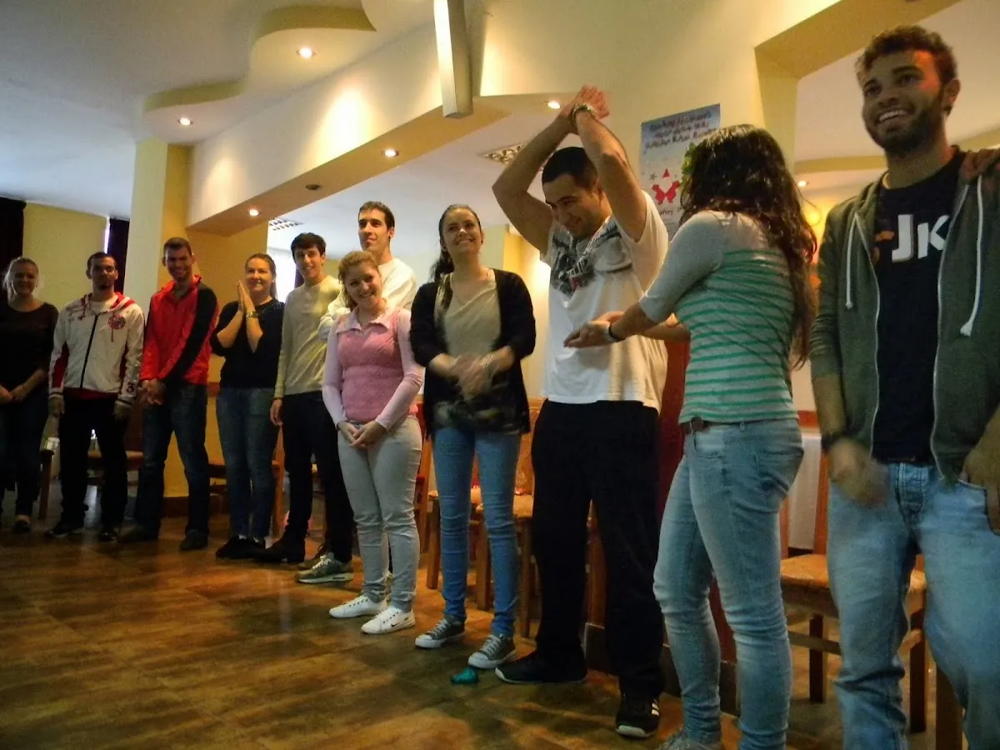

Unde a început totul
De peste un deceniu, deschidem uși pentru tineri: către competențe noi, oameni noi și locuri noi.
Proiecte ca organizație gazdă
Proiecte ca organizație de trimitere
Țări



10Mobilități de tineret
Organizație gazdă
Proiecte finanțate din fonduri acordate de către Uniunea Europeană prin programul „Tineret în Acțiune„:
- 2013Tineret în AcțiunePăuleștiÎncurajarea tinerilor pentru participarea la dezvoltarea inițiativelor în antreprenoriatul social
 2013Tineret în AcțiuneHorezuPaper Handicraft Bussiness – Winter Edition
2013Tineret în AcțiuneHorezuPaper Handicraft Bussiness – Winter Edition
Proiecte finanțate din fonduri acordate de către Uniunea Europeană prin programul „Erasmus+”, Acțiunea Cheie 1: Mobilitatea persoanelor în scop educațional – Proiect de mobilitate pentru tineri și pentru lucrătorii de tineret:
 2014Erasmus+Eforie NordMany ideas, one word: entrepreneurship!
2014Erasmus+Eforie NordMany ideas, one word: entrepreneurship! 2014Erasmus+Eforie NordYoung Enterprises
2014Erasmus+Eforie NordYoung Enterprises 2015Erasmus+Eforie NordEntrepreneurial Ideas
2015Erasmus+Eforie NordEntrepreneurial Ideas 2016Erasmus+Eforie NordStart-up Machine
2016Erasmus+Eforie NordStart-up Machine- 2018Erasmus+HorezuGetting to know each other!
 2019Erasmus+HorezuGrow Your Ideas!
2019Erasmus+HorezuGrow Your Ideas! 2019Erasmus+HorezuLet’s get a job!
2019Erasmus+HorezuLet’s get a job! 2019Erasmus+HorezuCareer Explorers
2019Erasmus+HorezuCareer Explorers
62Mobilități de tineret
Organizație de trimitere
- MKIntercultural learning as a key to European awarenessFotografii
- CYBack to nature, Back to HealthFotografii
- TRCreate by QuiltingFotografii
- PLFostering Youth InitiativesFotografii
- TRNoah’s Pudding DayFotografii
- TRThis is your timeFotografii
- TRTurning GreenFotografii
- TRYour EuropeFotografii
- TRMusic is Universal What About UsFotografii
- ELYes We CanFotografii
- MK1=3 in 1: Partnership, competences & networkingFotografii
- ITE-factorFotografii
- PLLet’s get to know Erasmus+Fotografii
- PLSport MarketingFotografiiProject card
- TRShow your mercy to womenFotografiiProject card
- ES#HashtagFotografiiProject card
- TRPromotion of Entrepreneurship to Combat Youth UnemploymentFotografiiProject card
- CYProjectDEORFotografiiProject card
- LTLibrary of experienceFotografiiProject card
- ESLet’s do itFotografiiProject card
- PLBe active – youth participation as a tool for youth work and projectFotografiiProject card
- ESDiscoveredFotografiiProject card
- PLYouth4Youth: 1st mobilityFotografiiProject card
- HRRule the world and become an Entrepreneur: volume 2FotografiiProject card
- PLWake up and be enterprising!FotografiiProject card
- SKProject Management for the Beginners in Youth WorkFotografiiProject card
- LTBrave Enough to be EntrepreneurFotografiiProject card
- ESLatintercambioFotografiiProject card
- LTSmiling rolling pinFotografiiProject card
- CYYouth for InclusionFotografiiProject card
- PLEastern Cultures for Overcoming BarriersFotografiiProject card
- PLLet’s playFotografiiProject card
- PLBusiness for youth is business 4UFotografiiProject card
- ESWorld in Co-workingFotografiiProject card
- ESPolicy RulesFotografiiProject card
- ESThe Third rolFotografiiProject card
- ESThe vision of the strangeFotografiiProject card
- ESExtreme RealitiesFotografiiProject card
- TRWastemanFotografiiProject card
- PTOpportunityFotografiiProject card
- ESSocial media for learning (SOMELEARNING)FotografiiProject card
- ESBe StrongerFotografiiProject card
- ITDigital FingerprintFotografiiProject card
- NOBe my guestFotografiiProject card
- PLYouth Culinary Club-european common cuisineFotografiiProject card
- TRBusiness for Women is Business for YouFotografiiProject card
- NOBetween my legsFotografiiProject card
- ELYouth Votes for EuropeFotografiiProject card
- ESBrand YourselfFotografiiProject card
- PLOur Home, Our ResponsibilityFotografiiProject card
- ESMission: Saving humanityFotografiiProject card
- ESThe training boatFotografiiProject card
- PLOur Home, Our ResponsibilityFotografiiProject card
- NOTrick or treat? no, say dignity!FotografiiProject card
- PLWe! – Citizens of Europe Youth ExchangeFotografiiProject card
- PLMusic Unites Us All!: 1st mobility
- PLMusic Unites Us All!: 2nd mobility
- PLYouth4Youth: 2nd mobility
- LVYouth voice-social support
- ESThe sixth Sense
- DEEmpower youth! Employability and capacity building of young people through non-formal education
- ESThe art of negotiating
2014Strategice
Titlul proiectului: „SOCIAL – Inițiativa Multiregională pentru Dezvoltarea Economiei Sociale și ocuparea persoanelor vulnerabile”.
Direcţia Generală de Asistență Socială și Protecția Copilului Olt (lider de parteneriat) în parteneriat cu Asociația „Tineret pentru Dezvoltare Durabilă” din Tîrgu-Jiu, Asociația „Centrul pentru Dezvoltarea Instrumentelor Structurale” din Slatina și Asociația “Inițiative Sociale” din Constanța derulează începând cu luna octombrie 2014 proiectul POSDRU/168/6.1/S/144367 ”SOCIAL – Inițiativa Multiregională pentru Dezvoltarea Economiei Sociale și ocuparea persoanelor vulnerabile” cofinanţat din Fondul Social European prin Programul Operaţional Sectorial pentru Dezvoltarea Resurselor Umane 2007- 2013.
Proiectul se înscrie în axa prioritară 6 „Promovarea incluziunii sociale”, domeniul major de intervenţie 6.1 „Dezvoltarea economiei sociale”.
Activităţile prevăzute în cadrul proiectului se întind pe o perioadă de 12 luni şi vizează, ca obiectiv general, facilitarea accesului pe piaţa muncii şi promovarea incluziunii sociale pentru 580 de persoane vulnerabile (tineri care părăsesc sistemul de protecţie, persoane cu dizabilităţi, persoane de etnie romă, persoane care au părăsit timpuriu şcoala, persoane care trăiesc din venit minim garantat şi copii în situaţii de risc) şi formarea profesionala a 60 angajaţi din sistemul de asistenţă socială din Olt, Gorj şi Constanţa, prin accesul acestora la întreprinderile de economie socială ce vor fi înfiinţate şi prin implementarea de servicii inovative de formare profesională, mentorat şi consiliere de specialitate.
2013AIS
Alte activități
- 01„Youth and Work” – „Europe for Citizens”: 11-13 August 2013Albumul de poze
- 02Ziua Educației Non-formale: 12 Octombrie 2013Albumul de pozevideo
- 03Christmas Campaign: 12 Decembrie 2013Albumul de poze
- 04Promovare, diseminare și exploatare rezultate proiecte finanțate prin “Tineret în Acțiune”Albumul de pozevideo
- 05Promovare, diseminare și exploatare rezultate proiecte finanțate prin “Erasmus +”Albumul de pozevideo